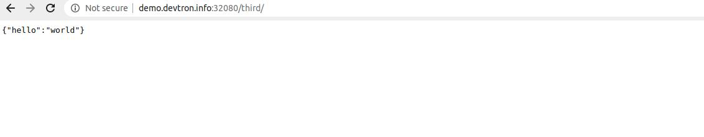

Introduction
In this application, you will learn about how to create a Expressjs Application that connects to mongoDb.
Follow the below mentioned steps, to deploy the application on Devtron using mongoDb Helm Chart.
1. Deploy mongoDb Helm Chart
To deploy mongoDb Helm Chart, you can refer to our documentation on Deploy mongoDb Helm Chart
2. Fork the Git Repository
For this example, we are using the following GitHub Repo, you can clone this repository and make following changes in the files.
* Dockerfile
This is the Dockerfile. This exposes our expressjs application to port number 8080
FROM node:7
WORKDIR /app
COPY package.json /app
RUN npm install
COPY . /app
CMD node server.js
EXPOSE 8080
* db.js File
This file will be used to connect to our database. This will include the service-name of the mongoDb Helm Chart, that you have deployed in Step1.
The syntax is as follows:
<service-name>:27017/<database-name>
This maps our service name to mongoDb’s port number 27017.
module.exports = {
DB: 'mondo-dev-mongodb-replicaset-client:27017/sale'
}
3. Create Application on Devtron
To learn how to create an application on Devtron, refer to our documentation on Creating Application
* Git Material
In this example, we are using the url of the forked Git Repository.
* Docker configuration
Give, the path of the Dockerfile.
* Configure Deployment Template
Enable Ingress, and give the path on which you want to host the application.
* Set up the CI/CD Pipelines
Set up the CI/CD pipelines. You can set them to trigger automatically or manually.
* Trigger Pipelines
Trigger the CI Pipeline, build should be Successful, then trigger the CD Pipeline, deployment pipeline will be initiated, after some time the status should be Healthy
4. Final Step
Check the Expressjs app connected to mongodb database, running successfully by hitting your application url.
The syntax is: http://<hostname>/<path>/
path will be the one that you have given in Step 3 while configuring the Deployment Template.
The output of our application would be as follows:

You can see that we are getting the JSON response. We have successfully connected our expressjs application to the mongoDb database.